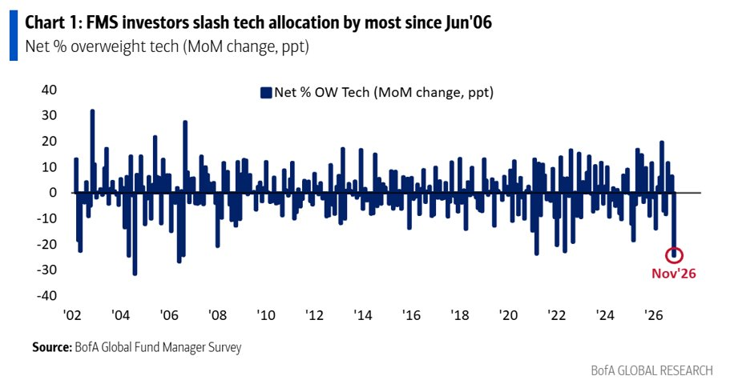
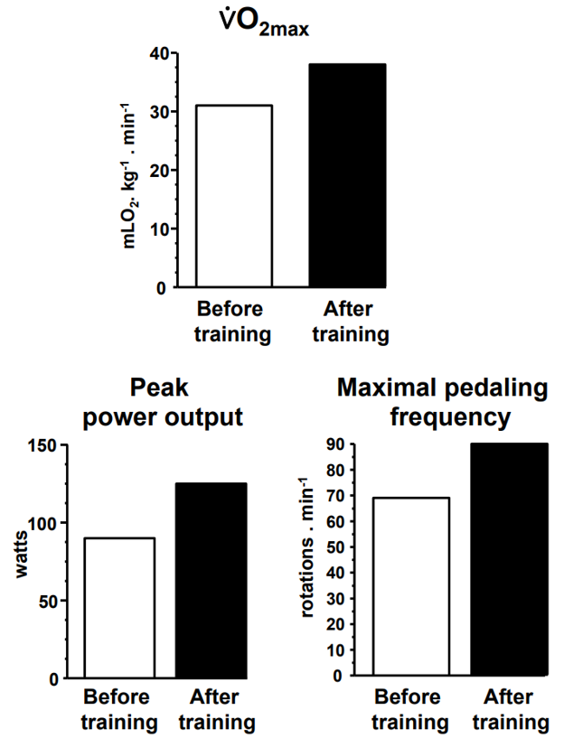
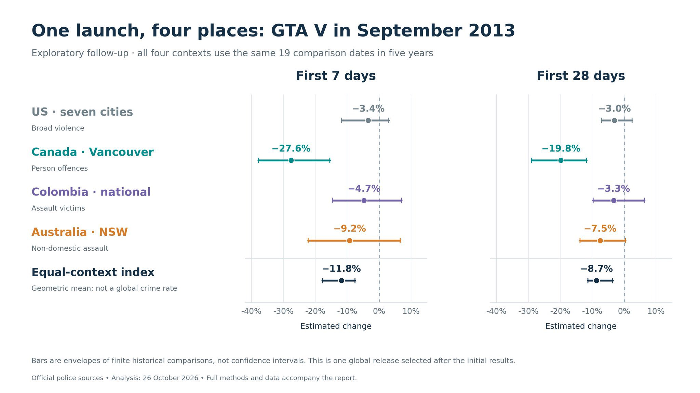

La petizione per riavere Jensen Huang, i fondi che scappano dalla tecnologia e l'IPO più grande della storia. E un ciclista di 103 anni
Brief di giovedì 19 novembre 2026 · lista X «Best» · 234 post da 51 account, dalle 13:33 del 18/11 alle 13:15 del 19/11 (ora di Roma)
🐑 Il post più apprezzato della giornata non parla di chip né di IPO. Paul Graham confessa di passare gran parte della vita a evitare le folle: idee alla moda, asset sopravvalutati, posti invasi dai turisti. «Quando mi trovo in mezzo a una folla, sento che qualcosa non va». Taleb gli risponde con Orazio: Odi profanum vulgus et arceo. Ieri le folle si sono mosse in tre direzioni: verso Jensen Huang, lontano dalla tecnologia, dentro l'IPO di Anthropic.
x.com/paulg/status/2123122026932007233
La petizione per reintegrare Jensen Huang come CEO ha superato le 200.000 firme: oltre 104.000 azionisti e 11.800 dipendenti, attuali ed ex. Circa il 24% di chi lavora oggi in Nvidia ha firmato. Il board tace. Bill Ackman lo accusa di non agire nell'interesse degli azionisti, tra «fallimenti di governance» di consiglieri «andati nel panico per i titoli dei giornali». Elon Musk paragona Huang a «Michael Jordan al suo apice»: «l'hanno cacciato dalla squadra mentre vincevano. È stato un errore». Travis Kalanick promette di presentarsi al quartier generale con un megafono. Taleb la chiude in una riga: senza di lui Nvidia non sarebbe mai esistita, mentre sostituire qualunque altro dipendente non avrebbe cambiato nulla.
Però, però, però. Il mercato non applaude: il titolo ha bruciato tutto il rialzo post-trimestrale ed è a -36% dal massimo del 6 ottobre, nonostante conti sopra le attese. E il dossier Cina pesa: con lo stop all'export di chip e al noleggio di cloud, i neocloud asiatici svendono GPU (circa il 10% dei ricavi Nvidia veniva dalla Cina). Del cioccolato svizzero diventato Nvidia avevamo parlato in (🍫 ff.139.1 Svizzero? No, NVIDIA).
Se Graham evita le folle, i gestori ne hanno appena formata una. Nel sondaggio BofA i fondi globali hanno tagliato l'esposizione alla tecnologia di 25 punti in un mese, al 12% netto: il calo più forte da giugno 2006, peggio del 2008 e del 2022. Un record 38% pensa che le aziende stiano investendo troppo, il 52% si aspetta tagli al capex di Big Tech. Gli hedge fund hanno scaricato tech per sei settimane, un evento «4+ sigma». I difensivi (beni di consumo, sanità, utility) battono il Nasdaq 100 di 22,8 punti tra ottobre e novembre, il distacco più ampio dal 2001, e il Nasdaq va verso il peggior novembre dal 2008.

La controlettura arriva dallo stesso account: per un evento personale di un CEO si grida allo scoppio della bolla, ma l'S&P 500 è a +7% da inizio anno, il capex AI americano supera i 1.000 miliardi l'anno e l'AI vale ~44% della crescita del PIL USA. Stamattina i futures sul Nasdaq 100 salgono di oltre il 2%. Ai posteri (💥 ff.73.1 Una bolla esplosa?).
Ieri Anthropic ha raccolto quasi 500 miliardi di ordini (400 istituzionali, 100 retail) e ha prezzato a 83 dollari per azione, sopra la forchetta 70–78. Tra IPO e collocamento privato fanno oltre 94 miliardi: più dei 86,2 di SpaceX a giugno, record assoluto. Epoch AI ha letto l'S-1: la spesa in calcolo cresce di 4 volte l'anno (contro 3 di OpenAI), 10 miliardi nel solo Q3 2026 contro 433 milioni in tutto il 2023; solo il 26% va all'inferenza per i clienti, il resto è ricerca. Tyler Cowen, che siede nel loro advisory board, ne trae una lettura controintuitiva: quotarsi è un segnale ribassista sulla superintelligenza imminente.
Se la superintelligenza arriva presto, perché diventare una società quotata, con tutto lo scrutinio e le regole che comporta? — Tyler Cowen
Google DeepMind ha rilasciato Gemini 4 Neon, a metà tra Carbon e Hydrogen, terzo nell'indice di Artificial Analysis con 61 punti, e Genie 4, mondi interattivi con audio nativo. Terzo modello importante in 20 giorni. Ethan Mollick ha fatto i conti:
x.com/emollick/status/2123249864503091301
Dall'altra parte, Greg Brockman racconta circa un anno di progressi sui chip AMD ottenuto in meno di 5 mesi con i modelli OpenAI, in un design già mandato in produzione. Dwarkesh Patel sostiene che la Cina è 12 ore, non 12 mesi, dietro i laboratori di frontiera; e secondo Paul Christiano nessun approccio di allineamento attuale ha più del 50% di probabilità di far fare a una superintelligenza ciò che vuole un utente. Mollick riassume: il punto non è il singolo rilascio, è l'accelerazione.
I verbali della Fed spingono verso un rialzo: quasi tutti i membri vedono «ulteriori interventi» appropriati, un paio pensa a più di 25 punti base a dicembre. Anthony Pompliano non ci sta: «scioccare» i cittadini con 50 punti base è stupido, il compito di una banca centrale è la stabilità. Intanto il petrolio USA scende sotto 82 dollari al barile, con il calo giornaliero della benzina più forte in 18 anni, e l'oro sotto 3.750 dollari con il dollaro ai massimi da aprile 2025. In Europa la Germania candida Markus Brunnermeier alla BCE, mentre lo spread decennale Francia-Germania è a ~148 punti, e i rendimenti reali tedeschi a 10 anni salgono all'1,40%, +29 punti in un mese.
Robert Marchand è stato testato in laboratorio a 101 e poi a 103 anni. Secondo il riassunto di Siim Land, VO2max da 31 a 35 ml/kg/min, potenza di picco da 90 a 125 watt, record dell'ora da 24,25 a 26,92 km. Tra un test e l'altro: circa 5.000 km l'anno, l'80% a ritmo facile. È morto a 109 anni.

Anzi. Rhonda Patrick ricorda che 1 minuto di attività vigorosa vale circa 8 di attività moderata o 73 di attività leggera per il rischio di morte cardiovascolare. Bryan Johnson pubblica il suo cuore: 43 battiti a riposo, minimo 38, calo notturno del 31%, 24.800 battiti al giorno in meno della media. E per l'Alzheimer i test del sangue arrivano all'83–92% di accuratezza, quasi come una PET. Un piano di allenamento per la vita, appunto (🏋️♂️ ff.152.2 Un piano di allenamento, ma per la vita).
Stanotte, a mezzanotte di New York, è uscito GTA VI dopo 13 anni di attesa: 1,65 miliardi di dollari solo in preordini e 17,07 milioni di copie, il 75% su PS5. Mollick prevede che domani sarà un giorno più sicuro: studi precedenti hanno trovato che i videogiochi violenti riducono la criminalità, perché la gente resta a casa a giocare, e GPT-6 Pro ha aggiornato i dati sull'uscita di GTA V nel 2013.

Le macchine volanti in GTA 6 le aspettavamo in (🍫 ff.139.3 Dov’è la mia macchina volante (in GTA 6?)), e i benefici dei videogiochi li difendevamo in (🕹️ ff.132.2 I benefici dei videogiochi). PS. Nel frattempo, nel mondo reale, Starship è andata in orbita ed è stata riacchiappata dalla torre.